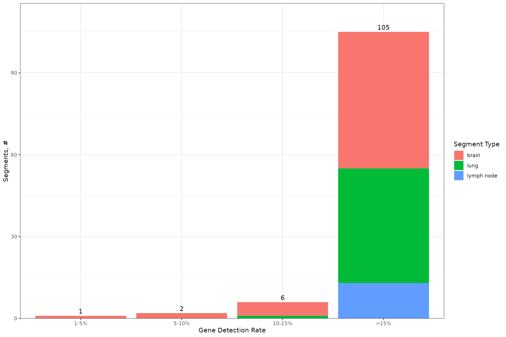
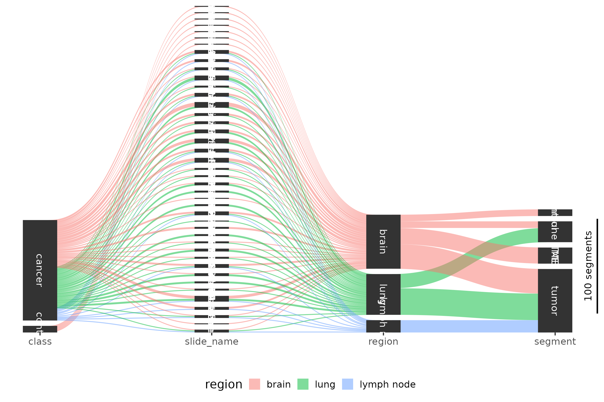
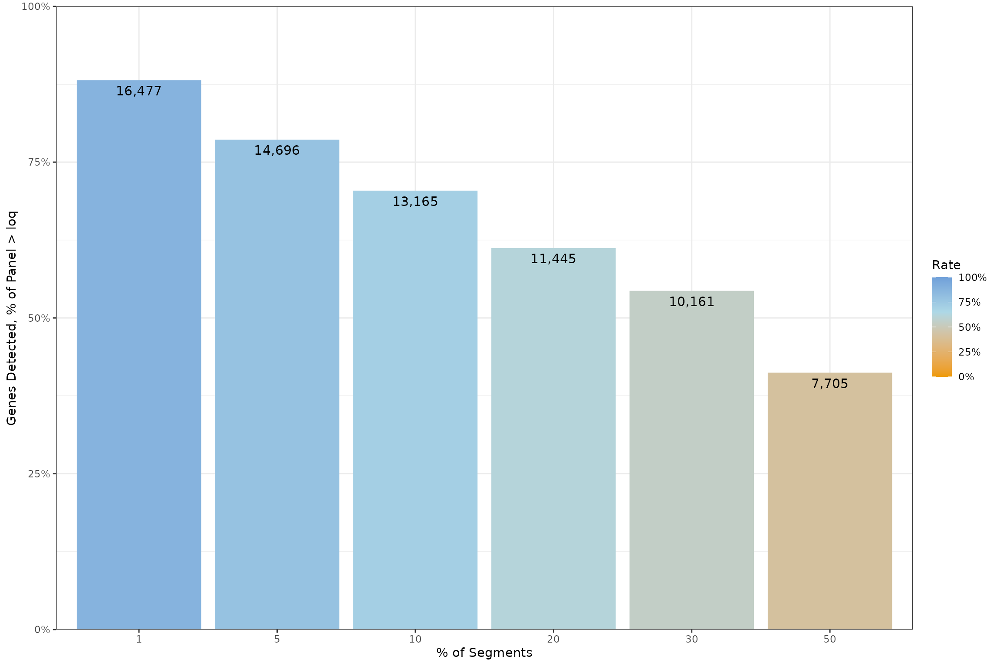
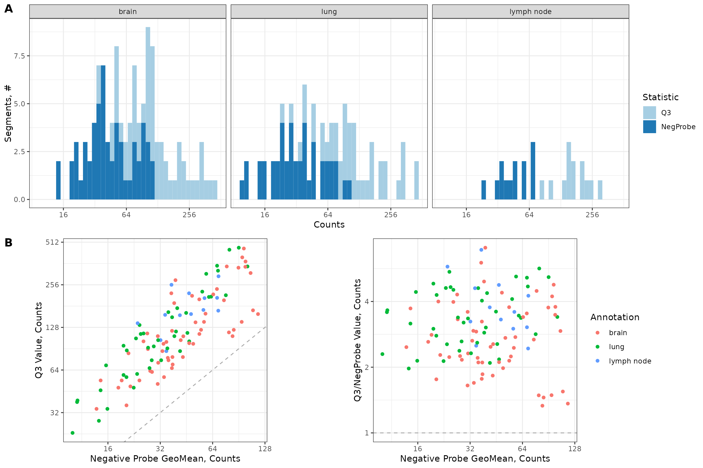
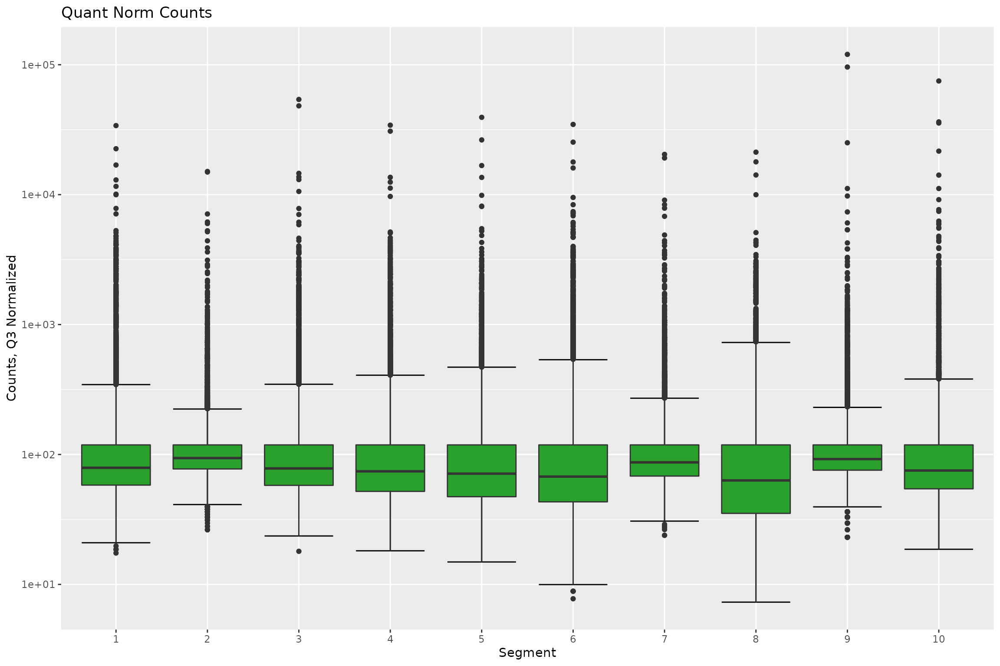
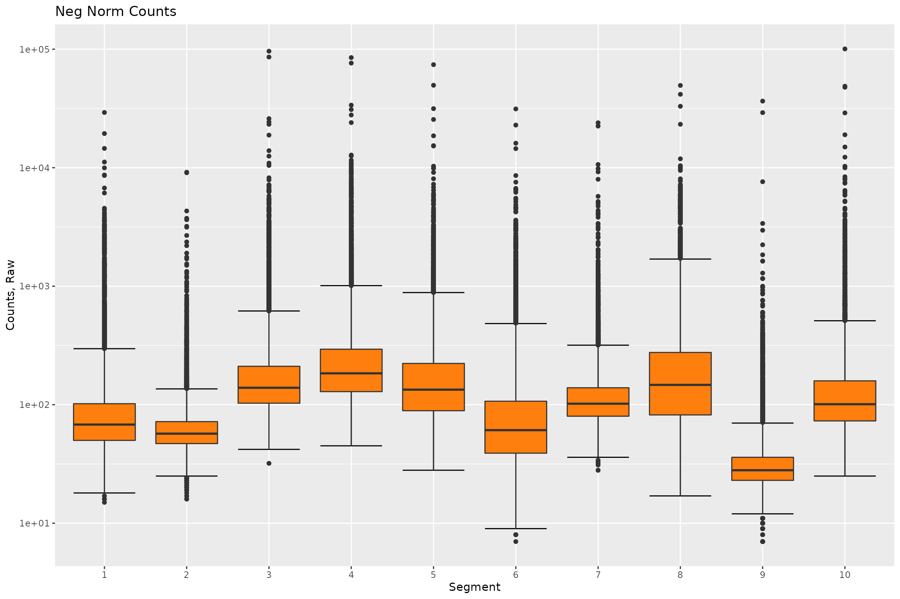

Integration Test Human Non-small Cell Lung Carcinoma (NSCLC)
Source:vignettes/Integration_Test_NSCLC.Rmd
Integration_Test_NSCLC.Rmd
knitr::opts_chunk$set(echo = TRUE)
library(devtools)## Loading required package: usethis## ℹ Loading DSPWorkflow## Registered S3 method overwritten by 'GGally':
## method from
## +.gg ggplot2## Loading required package: Biobase## Loading required package: BiocGenerics##
## Attaching package: 'BiocGenerics'## The following objects are masked from 'package:stats':
##
## IQR, mad, sd, var, xtabs## The following objects are masked from 'package:base':
##
## anyDuplicated, append, as.data.frame, basename, cbind, colnames,
## dirname, do.call, duplicated, eval, evalq, Filter, Find, get, grep,
## grepl, intersect, is.unsorted, lapply, Map, mapply, match, mget,
## order, paste, pmax, pmax.int, pmin, pmin.int, Position, rank,
## rbind, Reduce, rownames, sapply, setdiff, sort, table, tapply,
## union, unique, unsplit, which.max, which.min## Welcome to Bioconductor
##
## Vignettes contain introductory material; view with
## 'browseVignettes()'. To cite Bioconductor, see
## 'citation("Biobase")', and for packages 'citation("pkgname")'.## Loading required package: cowplot## Loading required package: dplyr##
## Attaching package: 'dplyr'## The following object is masked from 'package:Biobase':
##
## combine## The following objects are masked from 'package:BiocGenerics':
##
## combine, intersect, setdiff, union## The following objects are masked from 'package:stats':
##
## filter, lag## The following objects are masked from 'package:base':
##
## intersect, setdiff, setequal, union## Loading required package: GeomxTools## Loading required package: NanoStringNCTools## Loading required package: S4Vectors## Loading required package: stats4##
## Attaching package: 'S4Vectors'## The following objects are masked from 'package:dplyr':
##
## first, rename## The following objects are masked from 'package:base':
##
## expand.grid, I, unname## Loading required package: ggplot2##
## Attaching package: 'NanoStringNCTools'## The following object is masked from 'package:dplyr':
##
## groups## Loading required package: ggforce## Loading required package: gridExtra##
## Attaching package: 'gridExtra'## The following object is masked from 'package:dplyr':
##
## combine## The following object is masked from 'package:Biobase':
##
## combine## The following object is masked from 'package:BiocGenerics':
##
## combine## Loading required package: grid## Loading required package: gtable## Loading required package: knitr## Loading required package: patchwork##
## Attaching package: 'patchwork'## The following object is masked from 'package:cowplot':
##
## align_plots## Loading required package: reshape2## Loading required package: Rtsne## Loading required package: scales## Loading required package: SpatialDecon## Loading required package: tibble## Loading required package: tidyr##
## Attaching package: 'tidyr'## The following object is masked from 'package:reshape2':
##
## smiths## The following object is masked from 'package:S4Vectors':
##
## expand## Loading required package: umap## Loading required package: magrittr##
## Attaching package: 'magrittr'## The following object is masked from 'package:tidyr':
##
## extract## Loading required package: ComplexHeatmap## ========================================
## ComplexHeatmap version 2.10.0
## Bioconductor page: http://bioconductor.org/packages/ComplexHeatmap/
## Github page: https://github.com/jokergoo/ComplexHeatmap
## Documentation: http://jokergoo.github.io/ComplexHeatmap-reference
##
## If you use it in published research, please cite:
## Gu, Z. Complex heatmaps reveal patterns and correlations in multidimensional
## genomic data. Bioinformatics 2016.
##
## The new InteractiveComplexHeatmap package can directly export static
## complex heatmaps into an interactive Shiny app with zero effort. Have a try!
##
## This message can be suppressed by:
## suppressPackageStartupMessages(library(ComplexHeatmap))
## ========================================
root <- rprojroot::find_package_root_file()
knitr::opts_chunk$set(fig.width=12, fig.height=8, out.width = '100%')
knitr::opts_knit$set(root.dir = root)R Markdown
This runs the DSPworkflow package to completion using the Non Small Cell Lung Carcinoma Dataset:
1. Study Design:
# Ensure the working directory is the root package directory
# Set paths for downloading dcc files
downloads.path <- test_path("fixtures/Human_NSCLC/downloaded/")
tar.file.name <- "nsclc_dccs.tar.gz"
full.tar.path <- paste0(downloads.path,tar.file.name)
# Check if dcc files were previously downloaded
if (!file.exists(full.tar.path)) {
# Download dcc files and place in data folder
data.url <- "http://hpc.nih.gov/~CCBR/DSPWorkflow/nsclc_dccs.tar.gz"
download.file(data.url, full.tar.path)
untar(full.tar.path, exdir = downloads.path)
}
dcc.files <- dir(
file.path(
downloads.path,
"dccs"
),
pattern = ".dcc$",
full.names = TRUE,
recursive = TRUE
)
pkc.files <-
test_path("fixtures/Human_NSCLC/DevCom_H_WTA_v1.0.pkc")
pheno.data.file <-
test_path("fixtures/Human_NSCLC/NSCLC_annotation.xlsx")
sdesign.list <- studyDesign(dcc.files = dcc.files,
pkc.files = pkc.files,
pheno.data.file = pheno.data.file,
pheno.data.sheet = "Template",
pheno.data.dcc.col.name = "Sample_ID",
protocol.data.col.names = c("aoi", "roi"),
experiment.data.col.names = c("panel"),
slide.name.col = "slide name",
class.col = "class",
region.col = "region",
segment.col = "segment",
area.col = "area",
nuclei.col = "nuclei")## Warning in studyDesign(dcc.files = dcc.files, pkc.files = pkc.files, pheno.data.file = pheno.data.file, : area is not found in the annotation and will not be considered## Warning in studyDesign(dcc.files = dcc.files, pkc.files = pkc.files, pheno.data.file = pheno.data.file, : nuclei is not found in the annotation and will not be considered
# For creating fixture RDS
create.rds <- TRUE
if(create.rds) {
study.design.human.nsclc <- sdesign.list$object
saveRDS(study.design.human.nsclc, file = "tests/testthat/fixtures/Human_NSCLC/studyDesignHumanNSCLC.RDS")
}
print(sdesign.list$sankey.plot)
print("Created GeoMx Object\n\n")## [1] "Created GeoMx Object\n\n"
pData(sdesign.list$object)[,c("slide_name","class","segment")] ## slide_name class segment
## GSM6573697_DSP-1012300141221-A-A02.dcc Patient 1 cancer tumor
## GSM6573698_DSP-1012300141221-A-A03.dcc Patient 1 cancer TME
## GSM6573699_DSP-1012300141221-A-A04.dcc Patient 1 cancer tumor
## GSM6573700_DSP-1012300141221-A-A05.dcc Patient 1 cancer tumor
## GSM6573701_DSP-1012300141221-A-A06.dcc Patient 2 cancer tumor
## GSM6573702_DSP-1012300141221-A-A07.dcc Patient 2 cancer tumor
## GSM6573703_DSP-1012300141221-A-A08.dcc Patient 2 cancer TME
## GSM6573704_DSP-1012300141221-A-A09.dcc Patient 2 cancer tumor
## GSM6573705_DSP-1012300141221-A-A10.dcc Patient 3 cancer TME
## GSM6573706_DSP-1012300141221-A-A11.dcc Patient 3 cancer tumor
## GSM6573707_DSP-1012300141221-A-A12.dcc Patient 4 cancer tumor
## GSM6573708_DSP-1012300141221-A-B01.dcc Patient 4 cancer tumor
## GSM6573709_DSP-1012300141221-A-B02.dcc Patient 4 cancer TME
## GSM6573710_DSP-1012300141221-A-B03.dcc Patient 4 cancer tumor
## GSM6573711_DSP-1012300141221-A-B04.dcc Patient 5 cancer tumor
## GSM6573712_DSP-1012300141221-A-B05.dcc Patient 5 cancer immune TME
## GSM6573713_DSP-1012300141221-A-B06.dcc Patient 5 cancer TME
## GSM6573714_DSP-1012300141221-A-B07.dcc Patient 5 cancer tumor
## GSM6573715_DSP-1012300141221-A-B08.dcc Patient 5 cancer immune TME
## GSM6573716_DSP-1012300141221-A-B09.dcc Patient 5 cancer tumor
## GSM6573717_DSP-1012300141221-A-B10.dcc Patient 6 cancer tumor
## GSM6573718_DSP-1012300141221-A-B11.dcc Patient 6 cancer TME
## GSM6573719_DSP-1012300141221-A-B12.dcc Patient 6 cancer tumor
## GSM6573720_DSP-1012300141221-A-C01.dcc Patient 7 cancer tumor
## GSM6573721_DSP-1012300141221-A-C02.dcc Patient 7 cancer TME
## GSM6573722_DSP-1012300141221-A-C03.dcc Patient 7 cancer tumor
## GSM6573723_DSP-1012300141221-A-C04.dcc Patient 7 cancer tumor
## GSM6573724_DSP-1012300141221-A-C05.dcc Patient 8 cancer tumor
## GSM6573725_DSP-1012300141221-A-C06.dcc Patient 9 cancer TME
## GSM6573726_DSP-1012300141221-A-C07.dcc Patient 9 cancer tumor
## GSM6573727_DSP-1012300141221-A-C08.dcc Patient 9 cancer tumor
## GSM6573728_DSP-1012300141221-A-C09.dcc Patient 9 cancer tumor
## GSM6573729_DSP-1012300141221-A-C10.dcc Patient 10 cancer tumor
## GSM6573730_DSP-1012300141221-A-C11.dcc Patient 10 cancer TME
## GSM6573731_DSP-1012300141221-A-C12.dcc Patient 10 cancer tumor
## GSM6573732_DSP-1012300141221-A-D01.dcc Patient 11 cancer tumor
## GSM6573733_DSP-1012300141221-A-D02.dcc Patient 11 cancer tumor
## GSM6573734_DSP-1012300141221-A-D03.dcc Patient 12 cancer tumor
## GSM6573735_DSP-1012300141221-A-D04.dcc Patient 12 cancer tumor
## GSM6573736_DSP-1012300141221-A-D05.dcc Patient 12 cancer immune TME
## GSM6573737_DSP-1012300141221-A-D06.dcc Patient 12 cancer tumor
## GSM6573738_DSP-1012300141221-A-D07.dcc Patient 13 cancer tumor
## GSM6573739_DSP-1012300141221-A-D08.dcc Patient 13 cancer TME
## GSM6573740_DSP-1012300141221-A-D09.dcc Patient 13 cancer tumor
## GSM6573741_DSP-1012300141221-A-D10.dcc Patient 14 cancer tumor
## GSM6573742_DSP-1012300141221-A-D11.dcc Patient 14 cancer immune TME
## GSM6573743_DSP-1012300141221-A-D12.dcc Patient 14 cancer tumor
## GSM6573744_DSP-1012300141221-A-E01.dcc Patient 14 cancer tumor
## GSM6573745_DSP-1012300141221-A-E02.dcc Patient 15 cancer tumor
## GSM6573746_DSP-1012300141221-A-E03.dcc Patient 15 cancer immune TME
## GSM6573747_DSP-1012300141221-A-E04.dcc Patient 15 cancer TME
## GSM6573748_DSP-1012300141221-A-E05.dcc Patient 16 cancer tumor
## GSM6573749_DSP-1012300141221-A-E06.dcc Patient 16 cancer TME
## GSM6573750_DSP-1012300141221-A-E07.dcc Patient 16 cancer tumor
## GSM6573751_DSP-1012300141221-A-E08.dcc Patient 17 cancer tumor
## GSM6573752_DSP-1012300141221-A-E09.dcc Patient 17 cancer TME
## GSM6573753_DSP-1012300141221-A-E10.dcc Patient 17 cancer tumor
## GSM6573754_DSP-1012300141221-A-E11.dcc Patient 18 cancer TME
## GSM6573755_DSP-1012300141221-A-E12.dcc Patient 19 cancer tumor
## GSM6573756_DSP-1012300141221-A-F01.dcc Patient 19 cancer tumor
## GSM6573757_DSP-1012300141221-A-F02.dcc Patient 20 cancer tumor
## GSM6573758_DSP-1012300141221-A-F03.dcc Patient 20 cancer immune TME
## GSM6573759_DSP-1012300141221-A-F04.dcc Patient 20 cancer TME
## GSM6573760_DSP-1012300141221-A-F05.dcc Patient 20 cancer tumor
## GSM6573761_DSP-1012300141221-A-F06.dcc Patient 20 cancer tumor
## GSM6573762_DSP-1012300141221-A-F07.dcc Patient 15 cancer tumor
## GSM6573763_DSP-1012300141221-A-F08.dcc Patient 15 cancer immune TME
## GSM6573764_DSP-1012300141221-A-F09.dcc Patient 19 cancer immune TME
## GSM6573765_DSP-1012300141221-A-F10.dcc Patient 19 cancer immune TME
## GSM6573766_DSP-1012300141221-A-F11.dcc Patient 3 cancer tumor
## GSM6573767_DSP-1012300141221-A-F12.dcc Patient 3 cancer tumor
## GSM6573768_DSP-1012300141221-A-G01.dcc Patient 11 cancer TME
## GSM6573769_DSP-1012300141221-A-G03.dcc Patient 12 cancer immune TME
## GSM6573770_DSP-1012300141221-A-G05.dcc Patient 15 cancer TME
## GSM6573771_DSP-1012300141221-A-G07.dcc Patient 22 cancer tumor
## GSM6573772_DSP-1012300141221-A-G08.dcc Patient 22 cancer TME
## GSM6573773_DSP-1012300141221-A-G09.dcc Patient 21 cancer tumor
## GSM6573774_DSP-1012300141221-A-G10.dcc Patient 21 cancer tumor
## GSM6573775_DSP-1012300141221-A-G11.dcc Patient 19 cancer TME
## GSM6573776_DSP-1012300141221-A-G12.dcc Patient 18 cancer tumor
## GSM6573777_DSP-1012300141221-A-H01.dcc Patient 18 cancer immune TME
## GSM6573778_DSP-1012300141221-A-H02.dcc Patient 18 cancer tumor
## GSM6573779_DSP-1012300141221-A-H03.dcc Patient 24 cancer tumor
## GSM6573780_DSP-1012300141221-A-H04.dcc Patient 24 cancer tumor
## GSM6573781_DSP-1012300141221-A-H05.dcc Patient 24 cancer immune TME
## GSM6573782_DSP-1012300141221-A-H07.dcc Patient 12 cancer immune TME
## GSM6573783_DSP-1012300141221-A-H08.dcc Patient 24 cancer immune TME
## GSM6573784_DSP-1012300141221-A-H09.dcc Patient 26 cancer tumor
## GSM6573785_DSP-1012300141221-A-H10.dcc Patient 26 cancer immune TME
## GSM6573786_DSP-1012300141221-A-H11.dcc Patient 27 cancer TME
## GSM6573787_DSP-1012300141221-A-H12.dcc Patient 40 cancer tumor
## GSM6573788_DSP-1012310141221-B-A02.dcc Patient 29 cancer tumor
## GSM6573789_DSP-1012310141221-B-A03.dcc Patient 29 cancer immune TME
## GSM6573790_DSP-1012310141221-B-A04.dcc Patient 34 cancer tumor
## GSM6573791_DSP-1012310141221-B-A05.dcc Patient 34 cancer tumor
## GSM6573792_DSP-1012310141221-B-A06.dcc Patient 32 cancer immune TME
## GSM6573793_DSP-1012310141221-B-A07.dcc Patient 32 cancer tumor
## GSM6573794_DSP-1012310141221-B-A08.dcc Patient 31 cancer tumor
## GSM6573795_DSP-1012310141221-B-A09.dcc Patient 31 cancer immune TME
## GSM6573796_DSP-1012310141221-B-A10.dcc Patient 43 cancer tumor
## GSM6573797_DSP-1012310141221-B-A11.dcc Patient 43 cancer immune TME
## GSM6573798_DSP-1012310141221-B-A12.dcc Patient 30 cancer tumor
## GSM6573799_DSP-1012310141221-B-B01.dcc Patient 30 cancer immune TME
## GSM6573800_DSP-1012310141221-B-B02.dcc Patient 35 cancer tumor
## GSM6573801_DSP-1012310141221-B-B03.dcc Patient 35 cancer immune TME
## GSM6573802_DSP-1012310141221-B-B04.dcc Patient 35 cancer tumor
## GSM6573803_DSP-1012310141221-B-B05.dcc Patient 35 cancer immune TME
## GSM6573804_DSP-1012310141221-B-B06.dcc Patient 37 cancer tumor
## GSM6573805_DSP-1012310141221-B-B07.dcc Patient 37 cancer tumor
## GSM6573806_DSP-1012310141221-B-B08.dcc Patient 40 cancer tumor
## GSM6573807_DSP-1012310141221-B-B09.dcc Patient 40 cancer immune TME
## GSM6573808_DSP-1012310141221-B-B11.dcc Patient 44 cancer tumor
## GSM6573809_DSP-1012310141221-B-B12.dcc Patient 44 cancer tumor
## GSM6573810_DSP-1012310141221-B-C01.dcc Non-tumor brain #1 control control
## GSM6573811_DSP-1012310141221-B-C02.dcc Non-tumor brain #2 control control
## GSM6573812_DSP-1012310141221-B-C04.dcc Non-tumor brain #3 control control
## GSM6573813_DSP-1012310141221-B-C05.dcc Non-tumor brain #4 control control
## GSM6573814_DSP-1012310141221-B-C06.dcc Non-tumor brain #5 control control
## GSM6573815_DSP-1012310141221-B-C07.dcc Non-tumor brain #6 control control
## GSM6573816_DSP-1012310141221-B-C08.dcc Non-tumor brain #7 control control2. QC Preprocessing:
qc.output <- qcProc(object = sdesign.list$object,
min.segment.reads = 1000,
percent.trimmed = 80,
percent.stitched = 80,
percent.aligned = 80,
percent.saturation = 50,
min.negative.count = 10,
max.ntc.count = NULL,
min.nuclei = NULL,
min.area = NULL,
print.plots = TRUE)## Warning in qcProc(object = sdesign.list$object, min.segment.reads = 1000, : NTC, nuclei, area not found in the annotation, max.ntc.count, min.nuclei, min.area will not be considered
##
##
## Table: QC Summary for each Segment
##
## | | Pass| Warning|
## |:-------------|----:|-------:|
## |LowReads | 120| 0|
## |LowTrimmed | 120| 0|
## |LowStitched | 120| 0|
## |LowAligned | 120| 0|
## |LowSaturation | 120| 0|
## |LowNegatives | 114| 6|
## |TOTAL FLAGS | 114| 6|
##
##
## Table: Summary for Segment QC Removal
##
## | | # Before Removal| # After Removal|
## |:--------|----------------:|---------------:|
## |Features | 18834| 18834|
## |Samples | 120| 114|
##
##
## Table: Summary for Probe QC Calls (Grubb's Outlier Test)
##
## | Passed| Global| Local|
## |------:|------:|-----:|
## | 18831| 1| 2|
##
##
## Table: Summary for Probe QC Removal
##
## | | # Before Collapsing| # After Collapsing|
## |:--------|-------------------:|------------------:|
## |Features | 18834| 18833|
## |Samples | 114| 114|
##
##
## Table: Summary for Gene-level Counts
##
## | | # Before Collapsing| # After Collapsing|
## |:--------|-------------------:|------------------:|
## |Features | 18833| 18695|
## |Samples | 114| 114|
print(qc.output$segments.qc)## NULL
# For creating a fixture RDS
create.rds <- TRUE
if(create.rds) {
qc.human.nsclc <- qc.output$object
saveRDS(qc.human.nsclc, file = "tests/testthat/fixtures/Human_NSCLC/qcHumanNSCLC.RDS")
}3. Filtering:
goi <- c("PDCD1", "CD274", "IFNG", "CD8A", "CD68", "EPCAM", "KRT18", "NPHS1", "NPHS2", "CALB1", "CLDN8")
filtering.output <- filtering(object = qc.output$object,
loq.cutoff = 2,
loq.min = 2,
cut.segment = .05,
goi = goi)
print(filtering.output$`stacked.bar.plot`)
print(filtering.output$`tab`)##
##
## | | cancer| control|
## |:------|------:|-------:|
## |<1% | 0| 0|
## |1-5% | 1| 0|
## |5-10% | 2| 0|
## |10-15% | 5| 1|
## |>15% | 99| 6|
print(filtering.output$`sankey.plot`)
print(filtering.output$`genes.detected.plot`)
create.rds <- TRUE
if(create.rds) {
filtering.human.nsclc <- filtering.output$object
saveRDS(filtering.human.nsclc, file = "tests/testthat/fixtures/Human_NSCLC/filteringHumanNSCLC.RDS")
} 4. Normalization:
q3.normalization.output <- geomxNorm(
object = filtering.output$object,
norm = "q3")## Using Segment, Annotation as id variables## No id variables; using all as measure variables
## No id variables; using all as measure variables
print(q3.normalization.output$multi.plot)
print(q3.normalization.output$boxplot.raw)
print(q3.normalization.output$boxplot.norm)
neg.normalization.output <- geomxNorm(
object = filtering.output$object,
norm = "neg")## Using Segment, Annotation as id variables
## No id variables; using all as measure variables
## No id variables; using all as measure variables
print(neg.normalization.output$multi.plot)
print(neg.normalization.output$boxplot.raw)
print(neg.normalization.output$boxplot.norm)
create.rds <- TRUE
if(create.rds) {
q3.normalization.human.nsclc <- q3.normalization.output$object
saveRDS(q3.normalization.human.nsclc, file = "tests/testthat/fixtures/Human_NSCLC/q3normalizationHumanNSCLC.RDS")
neg.normalization.human.nsclc <- neg.normalization.output$object
saveRDS(neg.normalization.human.nsclc, file = "tests/testthat/fixtures/Human_NSCLC/negnormalizationHumanNSCLC.RDS")
}5. Unsupervised Analysis:
#Test Unsupervised Analysis:
unsupervised.output <- dimReduct(object = q3.normalization.output$object,
point.size = 3,
point.alpha = 1,
color.variable1 = "region",
shape.variable = "class"
)## using q_norm in the dimensional reductions## adding in the phenoData PCA, tSNE, and UMAP coordinates
print(unsupervised.output$plot$PCA)
print(unsupervised.output$plot$tSNE)
print(unsupervised.output$plot$UMAP)
6. Clustering high CV Genes and Heatmap:
heatmap.output <- heatMap(object = unsupervised.output$object,
ngenes = 200,
scale.by.row.or.col = "row",
show.rownames = FALSE,
show.colnames = FALSE,
clustering.method = "average",
cluster.rows = TRUE,
cluster.cols = TRUE,
clustering.distance.rows = "correlation",
clustering.distance.cols = "correlation",
annotation.row = NA,
annotation.col = c("class", "segment", "region"),
breaks.by.values = seq(-3, 3, 0.05),
heatmap.color = colorRampPalette(c("blue", "white", "red"))(120),
norm.method = "quant")## Warning: It not suggested to both set `scale` and `breaks`. It makes the
## function confused.
print(heatmap.output$plot)
7. Differential Expression Analysis:
goi <- c("ALDOC", "NCAM1", "SNAP25", "VIM", "COL3A1",
"COL1A1", "COL4A1", "FN1")
object <- q3.normalization.output$object
object <- object[goi,]
Gene <- Subset <- NULL
#First analysis:
reslist.1 <- diffExpr(object = object,
analysis.type = "Within Groups",
region.col = "segment",
regions = c("tumor", "TME"),
group.col = "class",
groups = c("cancer"),
n.cores = 4)## [1] "The number of cores selected is greater than the number of available cores, reducing number of cores to maximum of 2"
## At least one of the regions within the Region Column was not selected
## and is excluded: immune TME, control## Running Within Group Analysis between Regions
## Number of regions in group cancer: 2
grid.draw(reslist.1$sample_table)
grid.newpage()
grid.draw(reslist.1$summary_table)
lfc_col1 <- colnames(reslist.1$result)[grepl("logFC",colnames(reslist.1$result))]
pval_col1 <- colnames(reslist.1$result)[grepl("_pval",colnames(reslist.1$result))]
lfc.1 <- reslist.1$result %>%
dplyr::filter(Gene == "VIM" & Subset == "cancer") %>%
select(all_of(lfc_col1)) %>%
as.numeric()
pval.1 <- reslist.1$result %>%
dplyr::filter(Gene == "VIM" & Subset == "cancer") %>%
select(all_of(pval_col1)) %>%
as.numeric()
cat(paste0("\n\nvalue of VIM Fold Change is:", lfc.1))##
##
## value of VIM Fold Change is:-2.09
cat("expected value is negative")## expected value is negative##
## value of VIM pval is:8.48e-07
cat("expected value is significant")## expected value is significant
#Second analysis:
reslist.2 <- diffExpr(object = object,
analysis.type = "Between Groups",
region.col = "region",
regions = c("brain"),
group.col = "segment",
groups = c("TME", "control"),
n.cores = 4)## [1] "The number of cores selected is greater than the number of available cores, reducing number of cores to maximum of 2"
## At least one of the regions within the Region Column was not selected
## and is excluded: lung, lymph node## Running Between Group Analysis for Regions
## Number of groups in region brain: 2
grid.draw(reslist.2$sample_table)
grid.newpage()
grid.draw(reslist.2$summary_table)
lfc_col2 <- colnames(reslist.2$result)[grepl("logFC",colnames(reslist.2$result))]
pval_col2 <- colnames(reslist.2$result)[grepl("_pval",colnames(reslist.2$result))]
lfc.2 <- reslist.2$result %>%
dplyr::filter(Gene == "VIM" & Subset == "brain") %>%
select(all_of(lfc_col2)) %>%
as.numeric()
pval.2 <- reslist.2$result %>%
dplyr::filter(Gene == "VIM" & Subset == "brain") %>%
select(all_of(pval_col2)) %>%
as.numeric()
cat(paste0("\n\nvalue of VIM Fold Change is:", lfc.2))##
##
## value of VIM Fold Change is:2.55
cat("expected value is positive")## expected value is positive##
## value of VIM pval is:9.79e-09
cat("expected value is significant")## expected value is significant9. Violin Plot
genes <- c("ALDOC", "NCAM1", "SNAP25", "VIM", "COL3A1",
"COL1A1", "COL4A1", "FN1")
violin.plot.test <- violinPlot(object = q3.normalization.output$object,
expr.type = "q_norm",
genes = genes,
group = "region",
facet.by = "segment")## [1] " not found and will not be displayed"
grid.arrange(violin.plot.test)
10. Spatial Deconvolution:
ref.mtx = read.csv(test_path("fixtures", "sample_spatial_deconv_mtx.csv"),
row.names=1, check.names=FALSE)
rownames(ref.mtx) = sample(rownames(q3.normalization.output$object), size = 1500, replace = FALSE)
ref.annot = read.csv(test_path("fixtures", "ref_annot.csv"))
spatial.output <- spatialDeconvolution(object = q3.normalization.output$object,
expr.type = "q_norm",
ref.mtx = ref.mtx,
ref.annot = ref.annot,
prof.mtx = NULL,
use.custom.prof.mtx = TRUE,
cell.id.col = "CellID",
celltype.col = "LabeledCellType",
group.by = "segment")## Warning in create_profile_matrix(mtx = ref.mtx, cellAnnots = ref.annot, : not
## all cellNameCol names are in count matrix; 5311 cells are missing## [1] "Creating Atlas"
## [1] "1 / 21 : cTEC"
## [1] "2 / 21 : cTEC(cycling)"
## [1] "3 / 21 : mTEC_I"
## [1] "4 / 21 : mTEC_II"
## [1] "5 / 21 : TEC_Cldn10"
## [1] "6 / 21 : Epi(lung)"
## [1] "7 / 21 : muscle"
## [1] "8 / 21 : Fb_Postn"
## [1] "9 / 21 : mTEC_III"
## [1] "10 / 21 : Immune"
## [1] "11 / 21 : TEC(neuro)_like_1"
## [1] "12 / 21 : mTEC_IV(tuft)"
## [1] "13 / 21 : Fb_Aldh1a2"
## [1] "14 / 21 : Fb_Pi16"
## [1] "15 / 21 : Endo"
## [1] "16 / 21 : Mac"
## [1] "17 / 21 : TEC(neuro)_like_2"
## [1] "18 / 21 : Epi_Gcm2"
## [1] "19 / 21 : VSMC"
## [1] "20 / 21 : Epi_PAX8"
## [1] "21 / 21 : Ery"## Using celltype as id variables## Warning in xtfrm.data.frame(x): cannot xtfrm data frames
print(spatial.output$figures)## $abundance.heatmap
##
## $cell.profile.heatmap
##
## $composition.barplot
print("Spatial Deconvolution Done")## [1] "Spatial Deconvolution Done"